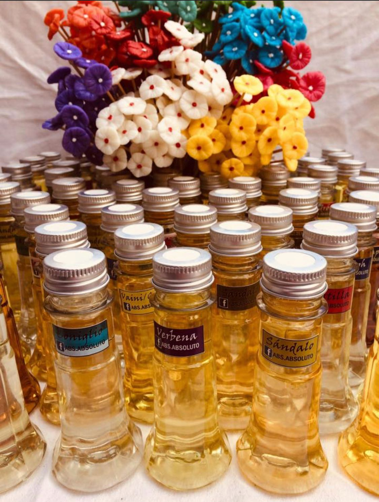
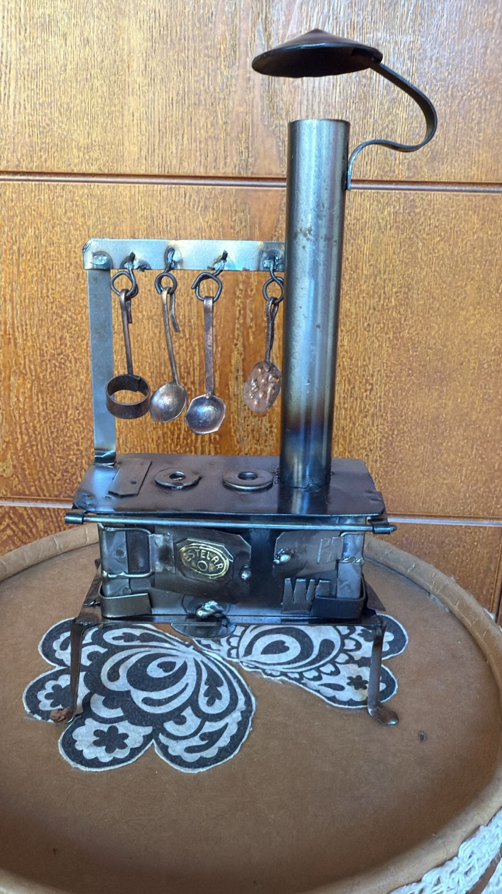
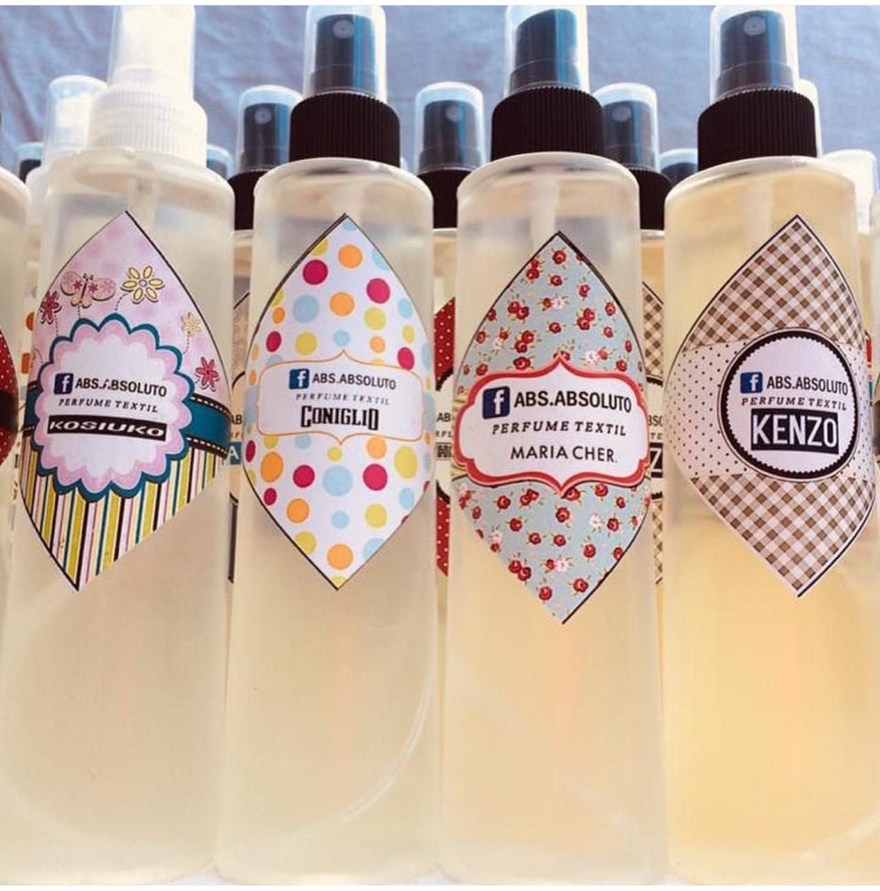
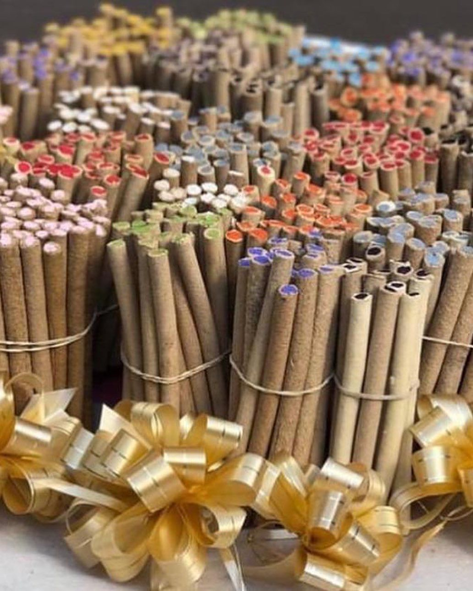
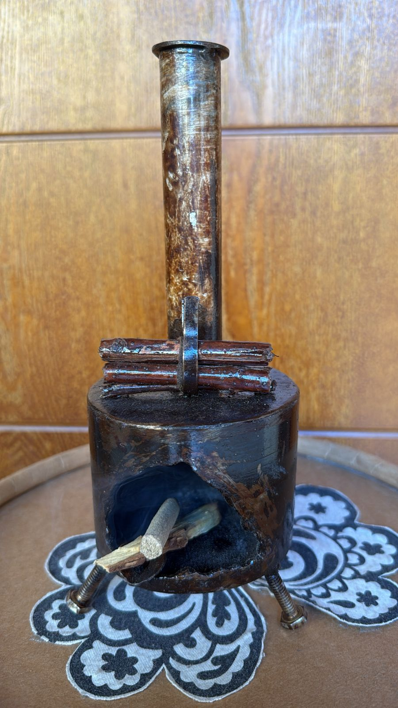
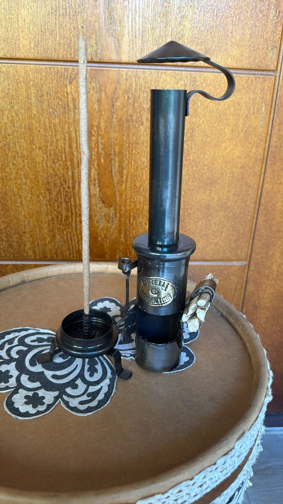
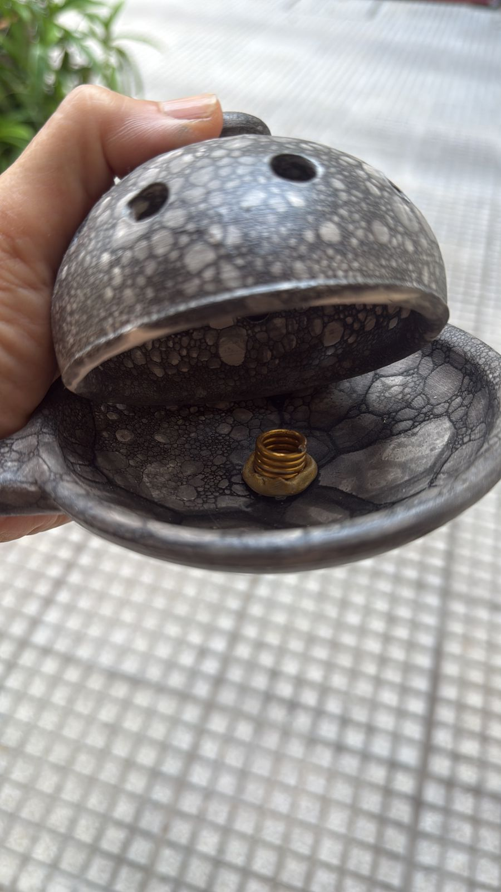
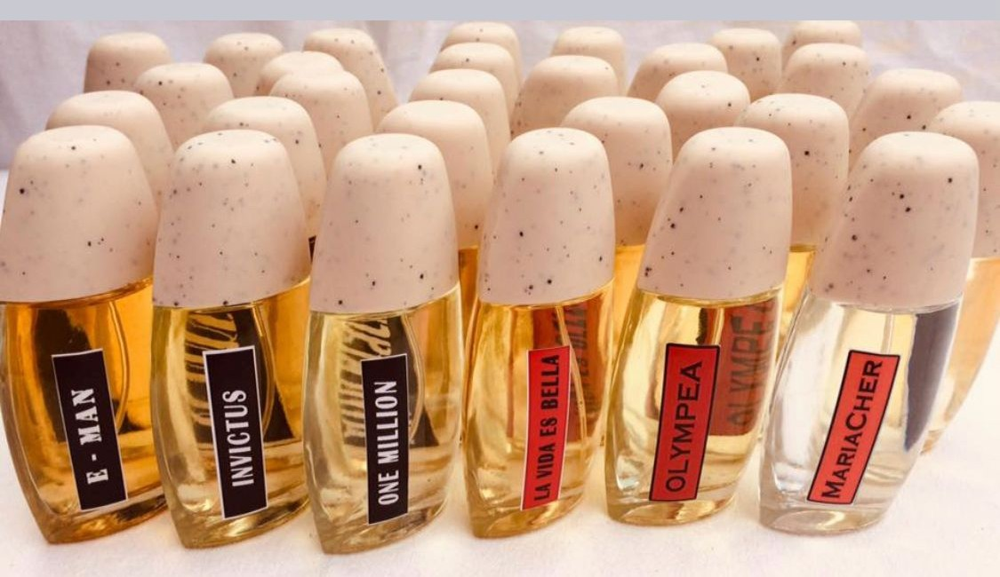

Nuestra Colección Completa de Productos
Explora nuestra extensa variedad de productos, diseñados para cumplir con tus expectativas.

Difusores de ambiente
Difusores para ambiente de 100ml con varillas de rattan se pueden usar para difusor de auto y para humificadores eléctricos.
Ver Más
Cocina porta sahumerios
Cocinas de leña de época pero para tus sahumerios favoritos. Calidad garantizada.
Ver Más
Difusores para Vehiculos
Al igual que los Difusores de ambiente son una opcion genial para perfumar tu auto.
Ver Más
Balsamos naturales
Son el secreto mejor guardado de la naturaleza, pequeños tesoros que acarician tu piel con la dulzura de sus extractos botánicos, envolviéndote en un abrazo de suavidad y bienestar. ¡Tu piel se sentirá irresistiblemente mimada!.
Ver Más
Perfumes textiles spray
Fragancias diseñadas para refrescar y aromatizar tus telas, ropa y espacios con un solo rocío.
Ver Más
Sahumerios tibetanos
Pequeñas varillas de incienso elaboradas artesanalmente, ideales para purificar ambientes, meditar y armonizar tus espacios con sus intensos y profundos aromas.
Ver Más
Porta sahumerios
Porta sahumerios de cerámica, para ambos sahumerios. ¡No te lo puedes perder!
Ver Más
Salamandra Artesanal
Porta sahumerios Salamandra realizada con hierro reciclado.
Ver Más
Réplica Salamandra Orelli
Un original y decorativo quemador de sahumerios, diseñado en chapa resistente, con la silueta distintiva del estilo "Orrelli". Ideal para tus rituales aromáticos.
Ver Más
Sahumador ceramica
Accesorio esencial para tus rituales de limpieza energética. Este sahumador de cerámica artesanal, con su práctica tapa, te permite sahumar de forma segura y controlada.

Perfumes imitaciones
Ofrecemos fragancias inspiradas en las marcas más icónicas del mercado. Nuestros perfumes de imitación capturan la esencia y el carácter de los aromas de diseñador, brindándote una alternativa accesible para disfrutar de tus fragancias favoritas.
Ver Más